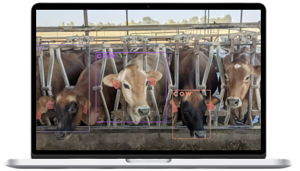

Cow Detection Software
An image-detection software to reduce water intake
My Role(s)
Full-Stack Developer
User Interface Developer
External Links
GitHub Repository
Introduction
Diamond J. Dairy is a modern dairy farm in Merced that utilizes an automated, state-of-the-art soaker system to keep their cows cool and
maximize dairy production. To achieve this, they periodically spray their cows with water whenever the temperature reaches a certain range.
However, with the way their soaker control system is set up, sometimes the water will spray inside the pen even when there are no cows
present. This leads to a significant water waste.
The soaker control system determines when water should be sprayed based on the built-in temperature tracker that measures the thermal heat
index. When the temperature reaches a certain point, the water in the pipe runs through the first pen for a minute, shuts off, then moves
on to the next pen. Once the water runs through all of the pens, the system will shut off for 10 minutes and cool the cows through
evaporative cooling. This process repeats again with a 2-minute shut-off period for as long as the temperature stays within that range.
Each barn has two pens and each pen has a long pipe with multiple nozzles for the water to spray. Suppose there are no cows in a pen when
the system turns on. The barn is divided into 15 sections, each separated by a vertical supporting beam. Each section has roughly 4 nozzles,
so there are a total of 60 nozzles per pen. Each gallon sprays about 1.2 - 2 gallons of water per minute. That means that there is at least
72 gallons of water wasted in one pen in the first cycle alone.
Our Solution
My team and I devised a solution to save water without compromising the comfort of the farm's cows. We installed a camera at the top of a
barn so that we could view both sides of the barn at the same time. This video feed is then saved in a Raspberry Pi, where it is stored in
an SD Card. The recorded video feed will then be fed through our program, where we use OpenCV and YOLO weights to detect cows.
We also developed a user interface to monitor the accuracy of our software and adjust any inconsistencies with the image detection. This
provides transparency for users and instills control between the user and the software.
Due to our timeframe and the extensive project scope, we were not able to connect this software with the soaker control system. In the
future, we would like to have individually controlled nozzles and use the connected systems to spray water only where our software detects
a cow. While individually controlled nozzles are good for precise water output and limited water intake, restructuring the water system of
the entire barn is costly. We would also like to conduct a cost-benefit analysis of this scenario to ensure that this added software and
the changes in the current system are profitable for Diamond J. Dairy Farm in the long term.
Demo
Here's a video that shows this code in action! The code for this is also in my GitHub.
Aditi Kisara | Shivanshu Gupta | Crystal Figueroa | Zachary Harry